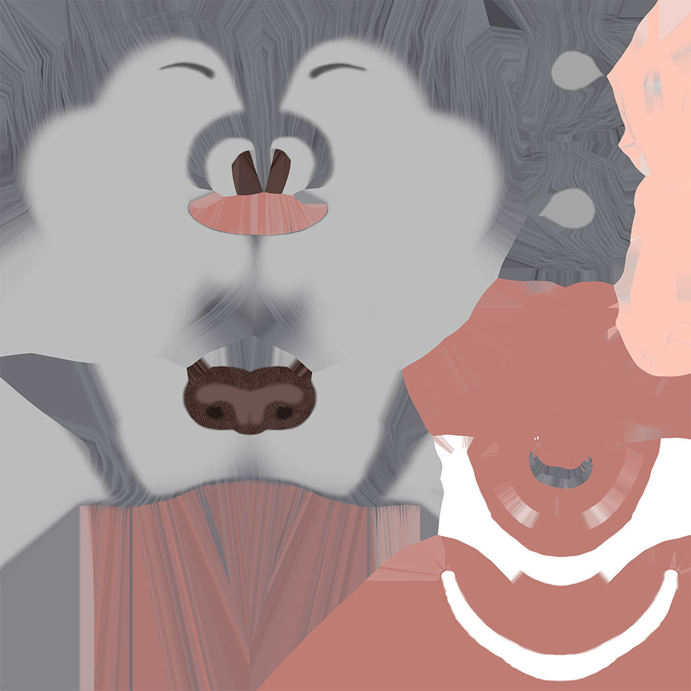
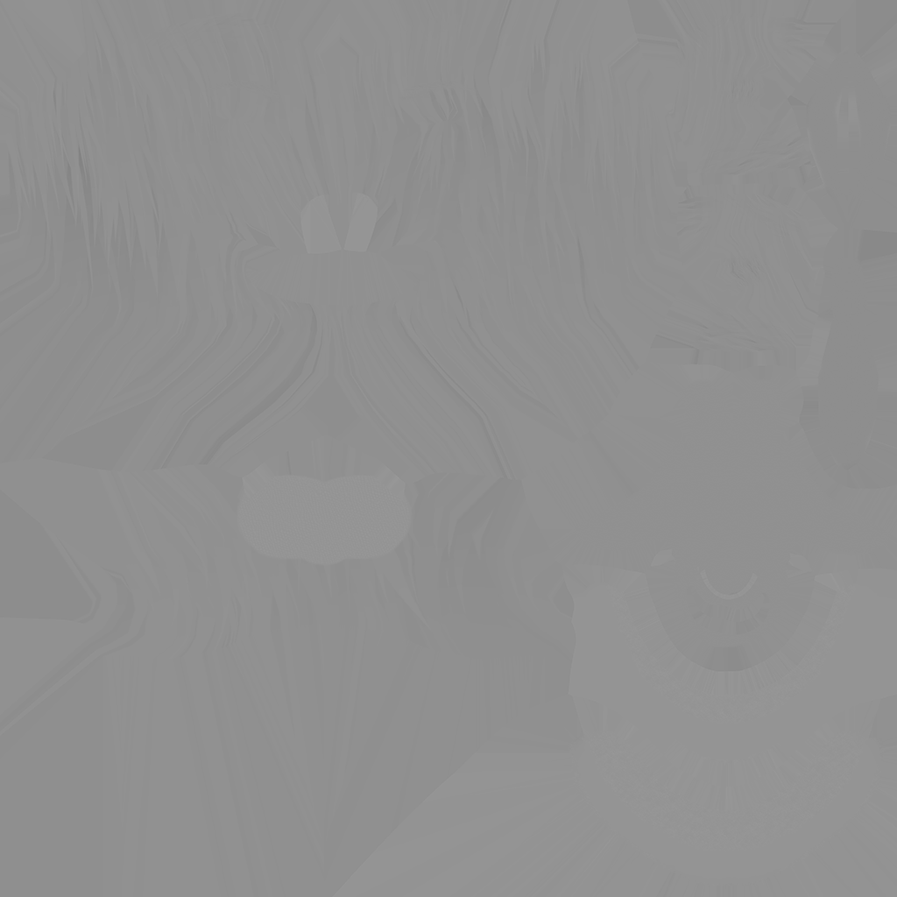
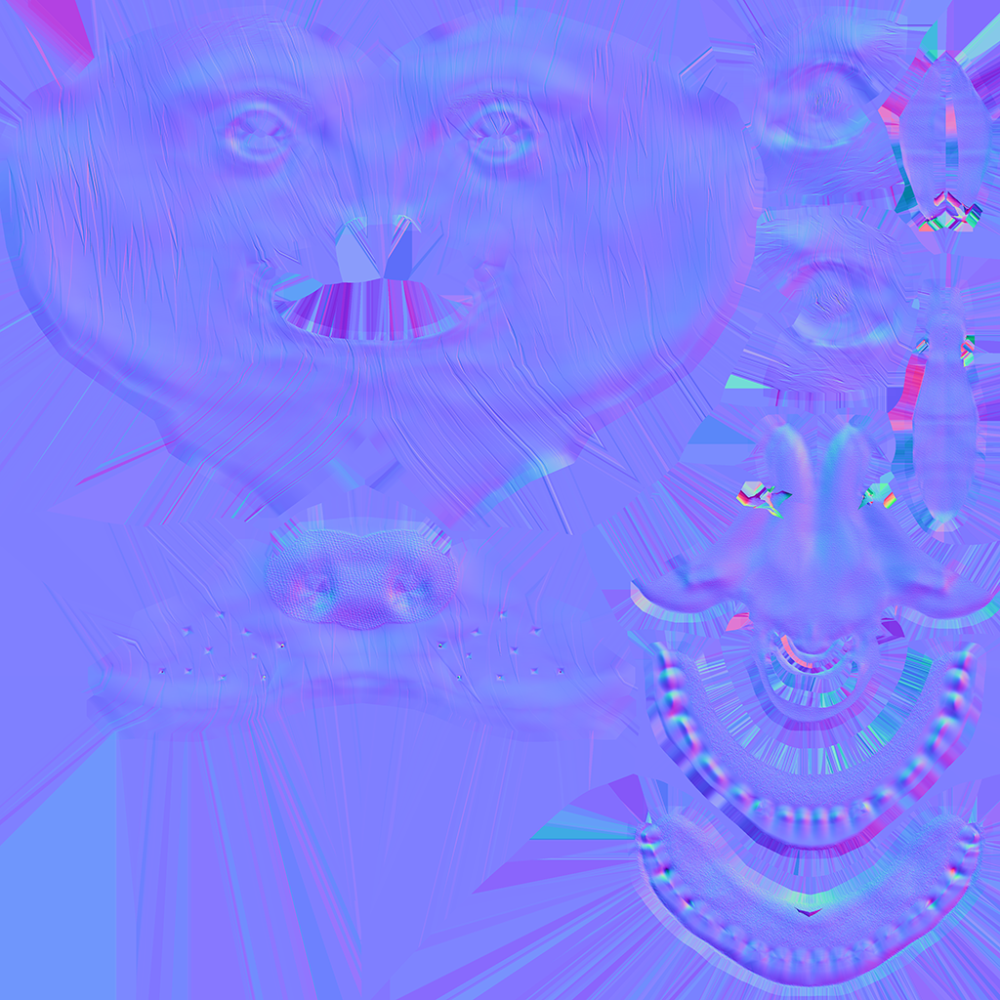
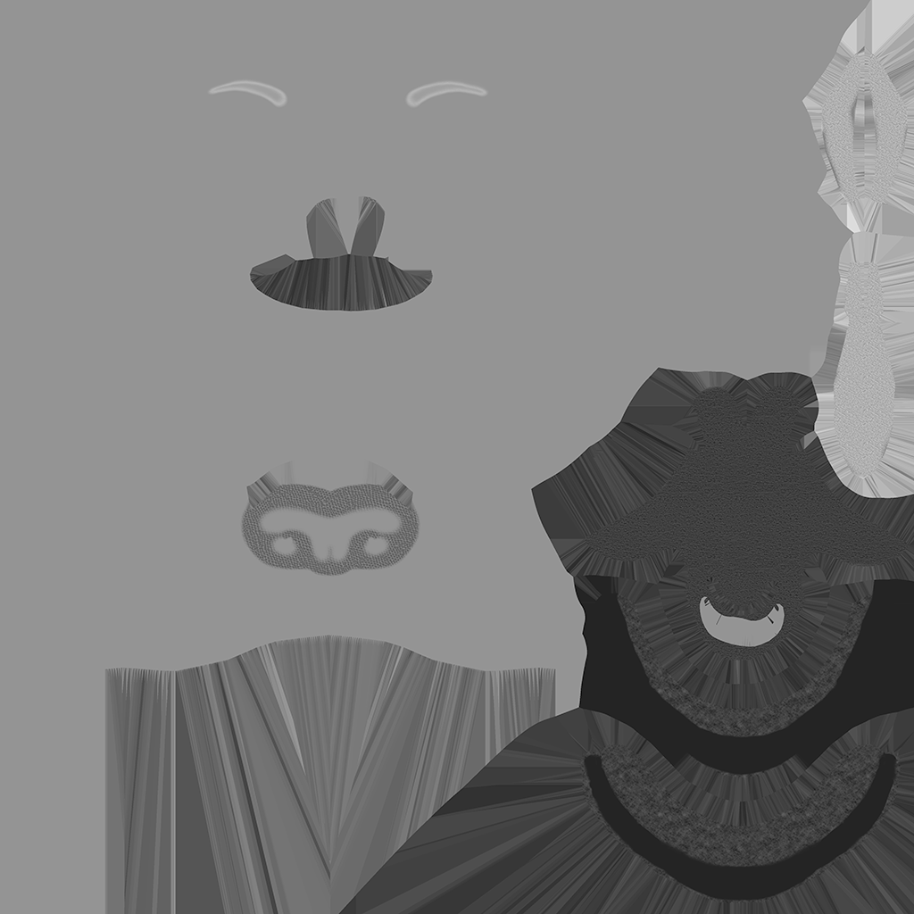
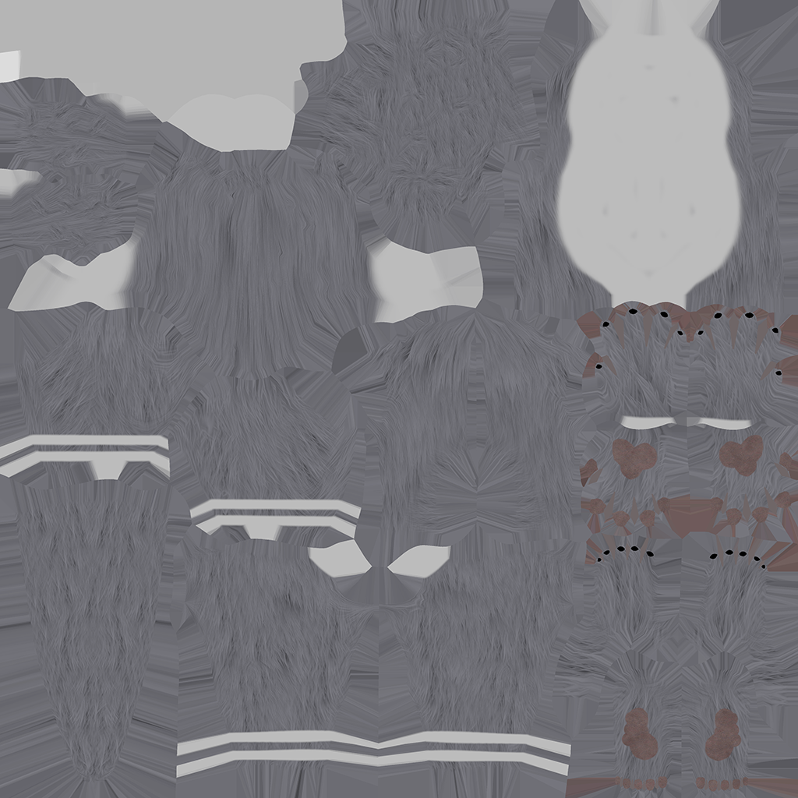
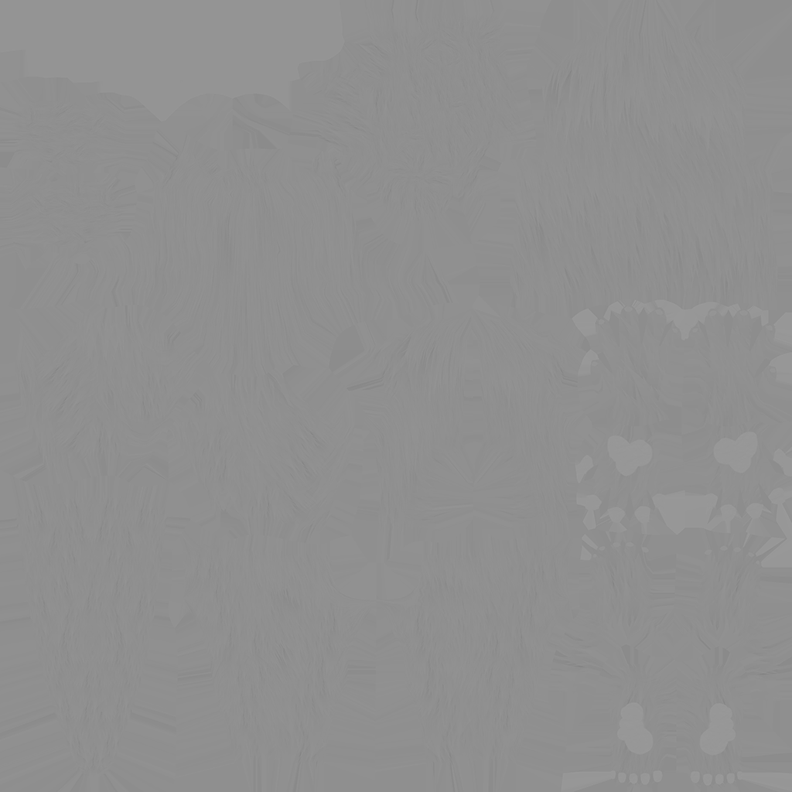
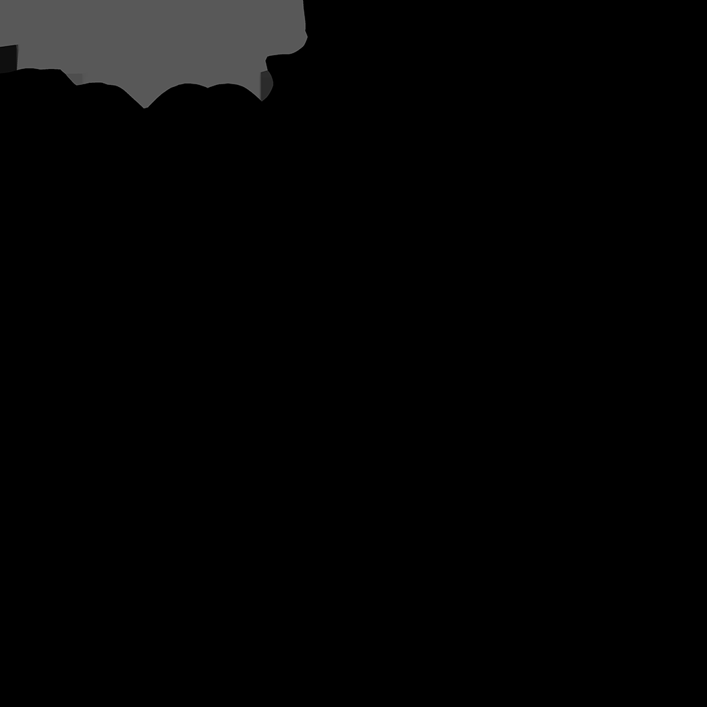
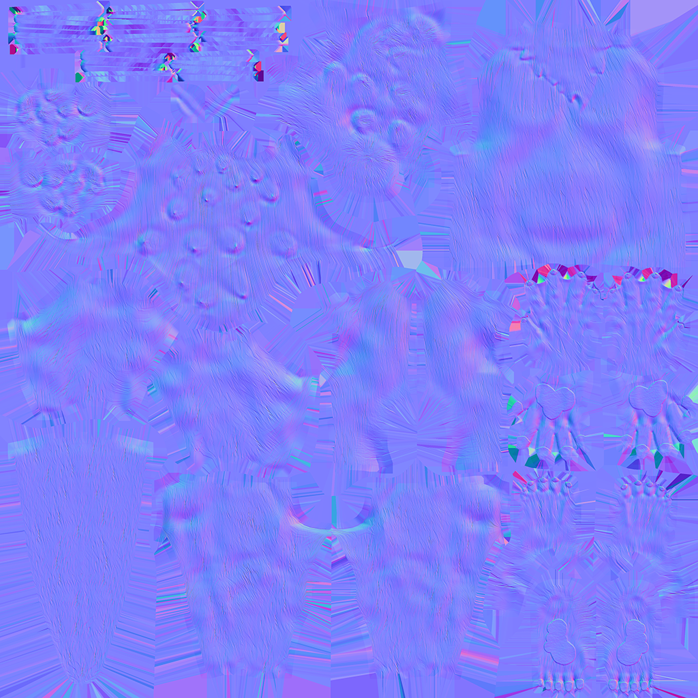
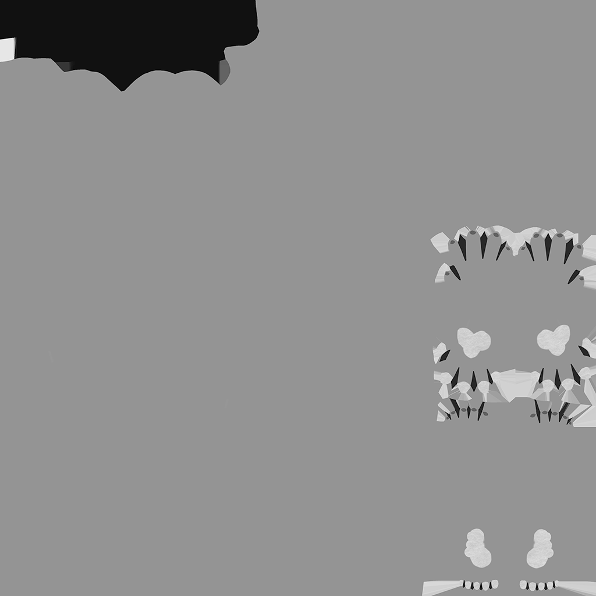
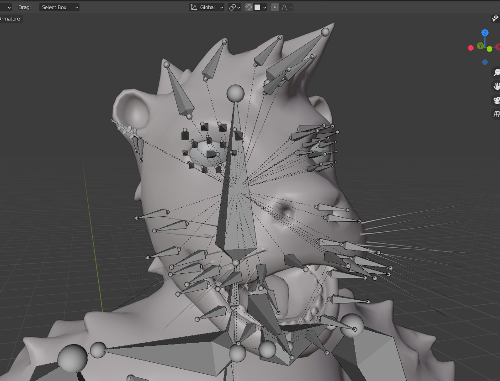

In 2021 my friend started streaming on Twitch. At the same time VTubing was kind of taking off. We had discussed making a VTuber model of his furry persona character and at the beginning of 2022 he commissioned me to do just that. I thought it would be a good learning experience and I have to admit the idea of my friend just casually streaming with an Avatar that I was responsible for making sounded pretty cool. There were aspects of it that I was concerned about tackling that I hadn't done before, but I was ready for a new challenge.
My friend gave me his character reference sheets that he had commissioned other artists to make from before. While this was a great start I knew I needed some more 3D friendly references that I could bring into the modeling program as I had only modeled one full body character before, and this time that character was an anthropomorphic otter. I found some good head on and side profiles of an otter model head as well as some of a full body bear model. This is exactly the kind of reference I needed and was the main reference I used other than the Lupa ref sheet. Since I was basing the model mainly off his most recent ref sheet, we decided to keep the caricaturish proportions and planned on having the textures be in between a cartoon look and a realistic look.

I decided to model the base mesh by sculpting it in ZBrush. I utilized ZSpheres to create the base mesh. From January to March, I worked on the head, body, hands, and feet, getting lots of feedback from my friend along the way. I utilized Dynamesh, Subdivision, and ZRemesher as I sculpted. For the most part the process went pretty smoothly as I had sculpted each of those parts of a model before. The only thing I hadn't done up to that point was model fur.
In terms of modeling the fur we went with tufts on the shoulders, upper chest, and back of the head. While you do not traditionally model or sculpt fur, as that would be something you would add later through different means, other methods were out of scope for this project.
After that I started modeling the inside of the mouth. This was the second element that I had not sculpted before and was more intimidating to approach. I studied some tutorials on how to make a “mouth bag” and gave it my best shot. I then sculpted both the teeth and tongue as separate objects first, put them in the mouth, then joined them to the model. The result ended up looking way better than I had initially anticipated and if I'm being honest was probably my favorite part of the project to work on.
At that point the model had 2,603,470 million polygons. I had done retopology in Maya before but this was my first time doing it in Blender. At the time, the process of retopologizing a model in Blender was very manual, using actual planes and snapping not technically built for retopologizing specifically. Things have gotten a bit better, but I would have saved a ton of time on this step with one of the retopology plugins that exists out there. It took me 2 months to retopo the model this way in my free time. I was obsessed with retaining the detail of the teeth and trying to triple the amount of polygons in the mouth compared to the rest of the model did not speed up the process. But it was worth it because after all the head was going to be the most focussed on part of the VTuber model when he streamed.

I brought the low poly into Substance Painter, baked the high poly onto it, then started texturing it. I ended up buying a brush for Substance Painter here to help with painting on fur made by the artist Eslar. When it came to the eyes I pulled the art for them from the ref sheet, upscaled each eye, then stamped them on to each eyeball. It was so satisfying to see the model fully textured after all this time and I knew my friend also became a lot more convinced that this was actually happening.
Albedo
Height
Metallic
Normal
Roughness
Albedo
Height
Metallic
Normal
Roughness
This was probably the most intimidating step in the process as I had also never rigged a model manually before. Luckily there is a feature to auto rig the model in Blender so I went with that as a base and started adjusting from there. The auto bone placement was great, the auto weight painting, not so much. I mainly had to adjust the weight for bones affecting the head. I repainted the weight for the bones in the jaw, eyes, eyelids, and fur tuffs so that they only affected the areas they should.
After that I had to lock in which program I was going to have my friend use to actually drive the model. I ultimately chose VSeeFace at the time as it was free, community driven, and took a VRM packaged model as an avatar that you can easily prepare in Unity. They are regularly used for VRChat to my understanding. As a result mouth movement is done through the use of shape keys. I specifically had to make a shape key for the pronunciation of each vowel. I would like to go back and improve them eventually as while the mouth movement technically looks “fine” in motion, the poses are not that realistic. The program grabs the bones for the eyes and the eyelids and maps the actual movements of the user from their webcam.
After testing the avatar and making fixes. I presented the model to my friend and he was thrilled with the result! It was so satisfying helping him set up the model on his own computer and getting to see him actually use it. While I mainly do 3D art for the practice of fully understanding the entire game development pipeline, this project was definitely worth all the effort. It forced me to learn some new skills to complete the goal set out by both of us, and as a side project I was very happy with the results!
• ZBrush: Base Mesh Organic Sculpting
• Blender: Retopologizing whole Model, Hard Surface Modeling (Earing), UV Unwrapping, Rigging
• Substance Painter: Texture Baking and Texturing of All Elements
• Unity: Create UniVRM Package out of the Finished Model
• VSeeFace: Control VTuber Avatar